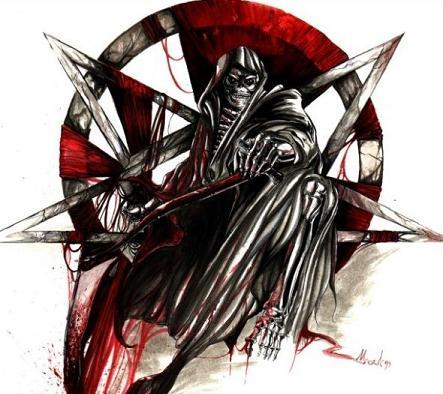

Forums galactiques > Assemblée Galactique : diplomatie officielle > Nettoyage de système
| Astronore Respect diplomatique : 607  02/06 ETU 15:34 | Score : 4 Détails
Dark Ezeckiel, pourquoi ne pas laisser tous les natifs goûter aux plaisirs de la paix, le général Victa a tenu ses promesses, je ne comprends pas votre entêtement à vouloir l'éliminer... Je vous rappelle que j'ai promis que je le protègerai, quit à produire des CLI 5 fois par jour ou à hyperatomiser moi-même ce système plusieurs fois par jour (je préviendrai tout le monde bien longtemps en avance bien sur et les natifs aussi avec dédommagements... mais j'espère ne pas avoir à le faire), vous n'arriverez pas à l'abattre... Si vous avez des revendications ou si tout simplement vous vouliez expliquer les raisons de votre haine, je vous prie de me contacter par x-com pour que j'essaie de voir ce qu'il est possible ou non de faire... Bien à vous, Astronore | ||
| tulmin Respect diplomatique : 24  02/06 ETU 19:47 | Score : 2 Détails je suis nouveau et je vien vous demander conseil car j'ai un probleme:
Dans mon systeme natal n°**** le commandant Falken m'a attaqué sans aucune raison et m'a pris mes deux planetes sans défense et je n'ait pas dévellopé l'hyperfusion comment faire pour régler le probleme svp aidez moi! | ||
| Réshep Respect diplomatique : 16  02/06 ETU 19:49 | Score : 3 Détails Donnez le Numero du systeme, et on vera ce que l'on pourra faire !
Par contre, l'avez vous menacé ou attaqué avant ? | ||
| Général Victa Respect diplomatique : 364  02/06 ETU 19:50  | Score : 3 Détails Je vais te passer 2 planétes dans 2 différents systémes ,sa t'aidera à survivre.
C'est moi qui a dit sa? Je crois qu'Astronore est entraint de me changer ,sa fait bizzard de faire du bien... ps:falken à déjà attaquer la nation des borgs ,si je m'abuse :"http://www.apocalypsis.org/2/assemblee/viewtopic.php?id=10769&forumpage=1&page=6" Son but est donc de détruire ces voisins ,si j'ai bien suivi. Edit:Ragnard ,il est ouvert ,je viens de lui passer deux planétes... | ||
| Ragnard Respect diplomatique : 1318  02/06 ETU 19:55 | Score : 2 Détails Commandant tulmin, étant donné que votre système natal est toujours fermé, personne ne peut, pour le moment, y pénétrer. Je vous conseille, cependant, de ne pas donner le numéro de ce système en public et de prendre contact avec le commandant falken afin de savoir pourquoi il vous a attaqué. Votre autre co-natif, le Collectif BORG, sauf erreur de ma part, ayant lui aussi des problèmes avec ce commandant, un soutien entre vous deux serait bienvenue. Contactez donc le Collectif BORG et à tous les deux vous devriez pouvoir calmer les ardeurs belliqueuses de falken en attendant que votre système soit ouvert.
| ||
| illidan Respect diplomatique : 86  02/06 ETU 19:57 | Score : 2 Détails etttt voila, tulmin est mon coaliser et je ne pourait pas l'aider sinon on vas encore dire que je sui un mecreant, il lui arrive la même chose qu'a moi même sauf que moi j'ais failli étre puni pour mettre defendu et avoir porter plainte, desoler tulmin mais tu comprendra pourquoi je ne t'aide pas ...
| ||
| Général Victa Respect diplomatique : 364 02/06 ETU 20:05 | Score : 3 Détails Le systéme est ouvert,je viens de vérifier...
Etant donner que falken ne veut pas déposer les armes. Si les deux voisins collectif borg et tulmin me donne l'accord de ramener la paix. J'enverrais des troupes(qui ne sont pas dans mon systéme natal mais cacher)pour calmer le voisin dictateur. Je refairais alors un partage en 3 equitable,et laisserais une flotte neutre diplomatique sur place. J'attens que les voisins me donnent l'accord pour intervenir et m'indique par mp leur systéme. Les voisins peuvent biensûr faire appel à quelqu'un d'autre pour cette affaire. | ||
| illidan Respect diplomatique : 86 02/06 ETU 20:06 | Score : 2 Détails merci car vous comprener pourquoi je ne peut moi même agir ...
| ||
| tulmin Respect diplomatique : 24 02/06 ETU 21:20 | Score : 2 Détails oui il a attaqué le commandant collectif borg et non je nelui ait envoyé ni attaque ni message de guerre ou menacant je suis débutant avec 100 vaisseaux maximum je ne vais pas l'attaquer et le systeme est lenuméro 1945
| ||
| Djib Respect diplomatique : 525  02/06 ETU 21:42 | Score : 2 Détails Pas de numero de systemes a l'assemblée, pour votre securité.
| ||
| tulmin Respect diplomatique : 24 02/06 ETU 21:53 | Score : -1 Détails daccord mais onmela demandé et de toute facon il y a un jour j'ai recu un conte rendu disant que des ondes sismiques avaient révélé le numéro de mon systeme a tout le monde alor je crain plus rien
| ||
| Faust VIII. Respect diplomatique : 109  02/06 ETU 21:59 | Score : 5 Détails Erreur.
Ce compte rendu n'a été envoyé qu'à vous et à vos co-natifs. Cela voulait tout simplement dire que votre système était ouvert à l'ensemble des commandants d'Espérance. Que tout le monde pouvait y pénétrer ou encore commercer avec les natif du systéme en question. Là, vous venez d'informer tout le monde que ce système est votre natal. C'est très dangereux en tant de guerre d'avoir un ennemi possedant cette information. vous avez encore le temps d'éditer votre message. | ||
| Général Victa Respect diplomatique : 364 03/06 ETU 07:18 | Score : 3 Détails Une force de paix comme convenu viens d'être envoyer vers votre systéme.
Je pense qu'1 mo de vaisseau suffira a calmé les ardeurs de ce voisin dictateur appeler falken. Mais au cas où,nous avons demander à ragnard de venir avec une force armée nous appuyez ,on ne sait jamais si des commandants peut respectueux d'esperance vous aurez passez beaucoups d'armes en douce cher falken. Eyant l'accord des 2 autres voisins,j'accomplirais ma mission de paix jusqu'au bout. Ne faites pas l'idiot ,réfléchissez... sinon un partage sera fait. Et si vous recommencez,j'aurais hélas la dur décision de vous éjectez du systéme pour protéger votre deux voisins à qui dans ce cas je redonnerais vos planétes. Ma force aprés l'opération ne restera pas sur place en eyant besoin pour me défendre actuellement contre de dangereux individus humains,celle de ragnard restera et suffira largement je pense. Mais pour garder un oeil sur l'affaire,je garderais une planéte dans le systéme. Edit:je vais les utilisés je crois...(service du fou) | ||
| Djib Respect diplomatique : 525 03/06 ETU 07:26 | Score : 4 Détails Victa il n'est pas question que vous conserviez une planete sur place. En plus ca ne sert a rien .... Ceci dit je respecte et soutient votre desir de participer. Votre redemption est en route.
Si vous n'etes pas capable de maintenir une flotte sur place ne vous engagez pas dans cette mission. HRP : les correcteurs du FOU sont avotre disposition, c'est dommage car l'on sent que vous vous etes appliqué, mais l'orthographe gache tout. En plus ne m'en veuillez pas, mais certains passages pretent a sourrire "calmer les Hardeurs", ce n'est pas du tout la meme chose que "calmer les ardeurs" .... | ||
| Amberle Respect diplomatique : 59  03/06 ETU 07:28 | Score : 3 Détails Vous faites cela pour agrandir votre empire, n'est-ce pas Démon? Autrement je ne vois pas pourquoi vous devriez garder une planète, vu que « la force de Ragnard » est sur place...
| ||
| Général Victa Respect diplomatique : 364 03/06 ETU 07:37 | Score : 2 Détails Je ne garderais pas de planéte sur place.
Mais la force de ragnard restera sur place . Et personnelement je ne veux pas agrandir mon empire ,il y a pleins de planétes vierges dans la galaxie ,je n'ai pas besoin des autres. | ||
| tulmin Respect diplomatique : 24 03/06 ETU 10:01 | Score : 2 Détails je viens de voir que le commandant falken a détruit le commandant collectif borg et ainsi lui meme ne mérite pas de vivre
| ||
| falken Respect diplomatique : 2  03/06 ETU 10:55 | Score : 1 Détails Pour qui te prend tu misérable commandant tulmin.
Pense être capable de juger de la mort ou vie d'un autre commandant supérieur a toi? Le commandant collectif borg n'est pas encore détruit ce n'est qu'une question d'heure avant son éradication. Et commandant tulmin renseigné vous sur le nombre de kamikaze a envoyé plutôt que de les envoyer par 10 dans une mort certaine vous n'avez aucune estime pour vos troupes. Je vous envoie mes salutations dans l'autre monde. | ||
| Général Victa Respect diplomatique : 364 03/06 ETU 11:04 | Score : 2 Détails Vous inquiétez pas ,si vous insistez vraiment dans cette voie ...
Ceux qui seront mort ,sa sera pas eux. Je viens refaire un partage avec mes forces bientôt ,si vous voulez vraiment jouer aux dictateurs avec vos voisins,je n'aurais autre choix que vous virez de ce systéme et de refaire un partage entre vos deux voisins. Quand le 1 ér partage sera fait aucun tire sera toléré que sa soit de vous ou de vos voisins. J'espere à ne pas en venir à en faire un deuxiéme partage et a calmé un de vous. | ||
| tulmin Respect diplomatique : 24 03/06 ETU 11:29 | Score : -3 Détails [red]commandant falken je ne vous avais rien fait j'étais tranquille vous voulezme tuer essayez vous me prendrez une planete maisvous y perdrez tot ou tarda la place de s'entretuer partageons le systeme a trois et si vous attaquez quelqi'in (moi ou le commandant Borg) on se le pmartagera a deux...[\red]
|
Forums galactiques > Assemblée Galactique : diplomatie officielle > Nettoyage de système